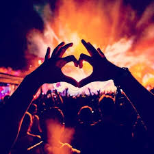

By the 1990s, house music had spread internationally and was one of the most popular genres in the UK and Europe, especially among young people.
House music’s departure from lyric-centered, message pushing pop music
created somewhat of a moral panic as mainstream society couldn’t
understand this new wave of music and its fans (Langlois 1992).
 As house music developed, its popularity spread into the mainstream and
eventually fused with the legal entertainment industry, meaning bars,
clubs, and festivals now catered to house music fans in Europe, and
later the US (Anderson 2009).
As house music developed, its popularity spread into the mainstream and
eventually fused with the legal entertainment industry, meaning bars,
clubs, and festivals now catered to house music fans in Europe, and
later the US (Anderson 2009).
Around 2010, the term “EDM” (Electronic Dance Music) came to encompass the now plentiful subgenres of dance music that evolved from house music, including trance, big room, future house, dubstep, progressive house and many others. “Raving” now applies to attending massive international festivals like Tomorrowland, which in 2017 attracted over 400,000 fans over two weekends and paid millions of dollars for world-famous DJ headliners.
House music, and its closely affiliated subgenre “techno” are still wildly popular in Europe, as evidenced by the Kappa FuturFestival in Turin, Italy. 45,000 people attended the rave in an old car factory to listen to underground house legends like Carl Cox and Sasha Digweed, albeit in a legally-sanctioned, commercial event. Although not exactly a 1990’s illegal warehouse rave, traditional house music events still do exist as an answer to the more commercial, festival-based EDM events. For years, traditional house purists have predicted the demise of EDM as it is known today, but others welcome the spread of popularity as a means to increase the visibility of dance music as a genre and the positivity that comes with it. British house pioneer Carl Cox explains by saying, “EDM’s an entry level to dance music, and I’m very happy about that. We fought for so long for dance music to be respected there. EDM’s a sound America has latched on to, but once people start going left and right of that scene, they’re going to find their art departments, their Loco Dices and their Sven Väths – and that’s a really good place to be.” While the over-saturation of EDM may seem like a death toll to some, Cox explains that with a more worldwide acceptance of mainstream EDM, listeners will have greater opportunities to discover the classic house tastemakers and legends, expand their musical knowledge and preferences, and further enter into the positivity of EDM culture. According to Cox, the commodification of the older era of house music into modern EDM culture is not a demise, but instead an evolution that benefits everyone in the subculture.
Truly, EDM has come a long way from its humble beginnings to now being recognized by the international nightlife industry as an extremely lucrative and profitable business opportunity. Due to this increasing profitability, the production quality of EDM events has risen exponentially, along with attendance of these events. Due to the high-energy nature of the music, visual effects at live EDM events are almost as important as the music itself. Lights, lasers, projections, fireworks, flames, live performers, and compressed air are all utilized regularly to enhance the event experience. In all, a high-end EDM event is an overwhelming and exhilarating audio-visual experience.

The main rave philosophy is one of good vibes and acceptance, outlined as PLUR (Peace, Love, Unity, Respect). Unlike other musical subcultures, violence is not common and ravers are generally nice to each other. People at raves often give each other things, are friendly and accepting, and are understanding about accidents like spilling a drink or bumping in to someone. Some ravers report that they try to take this philosophy of good vibes and apply it to the world outside raves (Wilson 2006).
Inclusion and Originality:
EDM and rave culture originated from the gay and black communities in Chicago in the 1980s and at that time, these ravers were characterized by mainstream culture as outsiders. However, as the music and the culture have firmly entered the mainstream, the members of this subculture have remained characteristically open and affirming to new members, maintaining the inclusivity that hallmarked the original movement. EDM festival-goers come from a diverse background of ages, races, nationalities, sexual orientations and economic situations. Not only are these people coming from unique backgrounds, but in rave culture, they are encouraged to be different and original. This sense of welcome and escapism through music is evidenced by the outlandish costumes worn by festival-goers. The vast majority of those wishing to participate in this subculture and attend these events wholeheartedly believe in and practice PLUR when interacting with others, both at music events and in their daily lives. While perhaps still looked down upon by outsiders, the sense of community and the love of the music unites a wide range of people together in a unique manner.